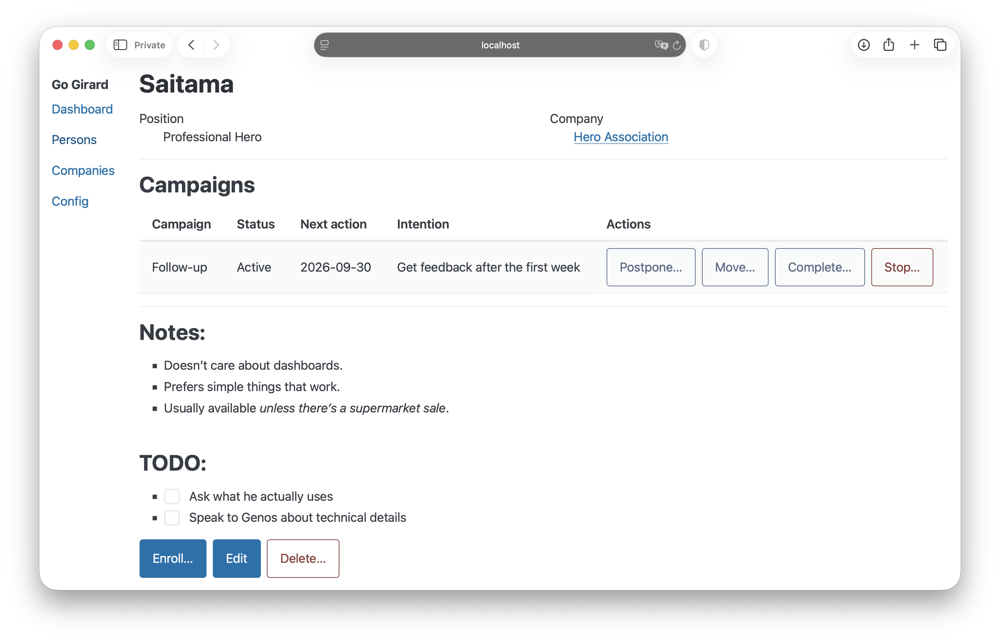

01
What should I handle today?
See the follow-ups that are due, choose one person, and work on one thing at a time.
Self-hosted CRM for focused B2B outreach
Go Girard keeps the context, intention and next action for every person you’re reaching out to. You decide what to say — and where to say it.
Free and open source
During a focused outreach or follow-up session, Go Girard helps you answer one of two questions.
01
See the follow-ups that are due, choose one person, and work on one thing at a time.
02
Open the person card and get back to the history, notes, intention and next step.

There are enough distractions already. You shouldn’t have to decide what belongs in fax, client segment or journey stage before you can remember something useful.
In Go Girard, notes are just notes. Keep the pains, facts, history, ideas, promises and anything else that can help in the next conversation. Notes support Markdown. Thank you, John Gruber!
A campaign gives you guidance. The follow-up queue brings the right person back when it’s time.
Pick one person. Read the context. Know the intention. Take the next step. Everything else can wait.
Go Girard doesn’t send emails or automate LinkedIn messages. On purpose.
Sometimes the next conversation is an email. Sometimes it’s LinkedIn, WhatsApp or a phone call. Go Girard remembers why you want to reach out and what happened before. The communication stays yours.
Your AI tool can ask what is due, load a person’s context and help you prepare the next outreach.
Go Girard exposes a read-only MCP endpoint. The AI can use the person’s notes, company, campaign and current intention as context. It can suggest a concrete next action or draft a message for your review.
http://localhost:8080/mcpA small mental model
01
Keep context, history, pains, facts, and ideas for every person you’re reaching out to.
02
A step has meaning: what you are trying to achieve and what your future self should remember.
03
See the active intentions that are due, choose one, and get back to the conversation.
Go Girard is small enough to understand and run yourself.
The current version is intended for local, single-user use. Data is stored in SQLite. Campaigns are configured in config.json and read at startup. Run one binary and open the web UI in your browser.
config.json.go-girard.http://localhost:8080/ in your browser.A slightly strange name, isn't it?
I started Go Girard from scratch in 2026 because I couldn’t find a tool that matched the way I do focused outreach.
The app is inspired by Joe Girard’s customer card system and his book How to Sell Anything to Anybody. The idea is simple: remember the person, not just the transaction. And, yes, the app is written in Go.
A possible next chapter
I’m considering a hosted version and commercial support for small teams. If that would be useful to you, tell me what you need.
FAQ
Go Girard is a self-hosted CRM for personal B2B outreach and follow-ups. It keeps relationship context, intentions and next actions together, so you can focus on the next conversation instead of reconstructing it.
Yes, if by CRM you mean a place to keep relationship context, intentions and follow-ups. No, if you expect pipeline dashboards, automated sequences and dozens of required fields. Go Girard is deliberately smaller.
No. Go Girard helps you decide whom to contact and why. You remain responsible for the communication, whether it happens by email, LinkedIn, WhatsApp or phone.
In a local SQLite database file.
If your AI tool can connect to MCP over Streamable HTTP, it can use Go Girard’s read-only MCP endpoint. The endpoint provides due intentions and person context. It does not let the AI modify Go Girard data.
Not today. The current version has no user management or authorisation and is intended for local use. This may change in the future.
Yes. The release page provides binaries for macOS and Linux. You can also build Go Girard from source.
Not yet as a standard offering. I’m exploring both. If you would pay for hosting, setup help or support for a small team, tell me about your use case in Discussions.